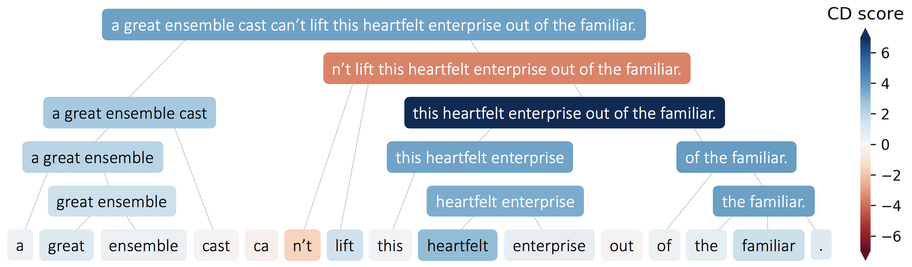

towards interpretable ml for neuroscience
chandan singh
advised by bin yu
requirements
- can have outside faculty
- can only have one faculty that is remote
- at least 2 eecs (0% counts e.g. bin)
- chair must be eecs
- chair has to bring form back to division
- prepare ~45 mins of info
- total 2-3 hrs (2 hrs min) - do this
overview
collaborators
- prof. bin yu
- jamie murdoch
- raaz dwivedi
- karl kumbier
- christopher lu
- yu wang
- summer devlin
- reza abbasi-asl
- prof. jack gallant
- jamie murdoch
- michael eickenberg
- michael oliver
- prof. gang-yu liu
- jiali (lillian) zhang
interpretable ml: why?
with jamie murdoch, karl kumbier, reza abbasi-asl, & bin yu


ml is powerful
- strong predictive performance
- part of the power is the surge in big data (e.g. calcium imaging)
- often perceived as black-box: need interpretability
defining interpretability
- often defined poorly
interpretable ml framework

explaining single dnn predictions
with jamie murdoch & bin yu
the goal

previous work
- gradient-based methods (e.g. LRP)
- perturbation-based (e.g. LIME)
- CD (for LSTMS)
cd for cnns

equations
β = relevant,γ = irrelevant,i = layer index- linear/conv:
βiγi=Wβi−1+|Wβi−1||Wβi−1|+|Wγi−1|⋅b=Wγi−1+|Wγi−1||Wβi−1|+|Wγi−1|⋅b - maxpool:
max_idxsβiγi=argmaxidxs[maxpool(βi−1+γi−1;idxs)]=βi−1[max_idxs]=γi−1[max_idxs] - relu:
βiγi=ReLU(βi−1)=ReLU(βi−1+γi−1)−ReLU(βi−1)

vision example

quantitative results

getting random forest importance scores
with summer devlin, jamie murdoch, & bin yu
the goal
explain a single prediction by a random forest in terms of the input
previous work
- permutation tests
- iRF
xor: a simple failure case
a neuroscience application
with michael eickenberg, michael oliver, reza abbasi-asl, jack gallant, & bin yu


previous work: deeptune
- deeptune analysis
big-data neuroscience
- lots of challenges with understanding the brain
- needs interpretability
intersection of different approaches
- theory
- data-driven experiments
- fine-tuned experiments
describing textures from nanoscience
with lillian zhang, chris lu, bin yu, & gang-yu liu


providing descriptions of nanomaterials
towards dnn theory 1: adam vs sgd
with raaz dwivedi, bin yu, martin wainwright


learned weights are different

towards dnn theory 2: scattering transform
with christopher lu, bin yu (building on work by yuansi chen, reza abbasi-asl)
scattering transform
properties
translation invariance:
scat(f(x))=scat(f(x−c))∀f∈L2(ℝd),c∈ℝd Lipschitz continuity:
∀f,h||scat(f)−scat(h)||≤||f−h||
conv filters

conv + scat filters

conv + scat 1x1 filters

what's next: delving deeper into neuro
with yu wang, bin yu, ed boyden


connectomics: unsupervised image segmentation
towards interpretable ml for neuroscience
chandan singh
advised by bin yu